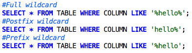

Ways to Optimize Your SQL Queries
June 5, 2014
This week has been all SQL queries and databases. It's been a fun topic! However, learning to traverse databases got me wondering: Is there an optimum way to frame my SQL queries to maximize performance? The last thing I want to do is send out queries that take too long for the database to retrieve and suck up all my processing power. Surely there are some handy tips out there to make sure I'm getting the best database bang for my SQL query buck? Turns out, there are! Here are a few of the most helpful ones I found:
Beware the SELECT *
The sql query becomes faster if you use the actual columns names in SELECT statement instead of than '*'. It's all too easy to code all your queries with SELECT '*' instead of listing the columns individually.
For example: Write query as
Not

The problem again is that it pulls more data than you need. If you're only going to use 3-5 columns, why pull all 120? You're not only processing more data than you need, but you're also taking resources away from other processes.
Index...Properly
Indexes and proper filtering can solve what is normally a very time-consuming process. All primary keys need indexes because they make joins faster. This also means that all tables need a primary key. This will ensure that every table has a clustered index created. So, any data retrieval operation from the table using the primary key, or any sorting operation on the primary key field or any range of primary key values specified in the where clause will retrieve data from the table very fast.
Lastly, be careful with adding indexes because they need to be maintained by the database. If you do many updates on that field, maintaining indexes might take more time than it saves.
Watch Your Wildcard
In SQL, wildcard is provided for us with ‘%’ symbol. Using wildcard will definitely slow down your query especially for table that are really huge. We can optimize our query with wildcard by doing a postfix wildcard instead of pre or full wildcard.

That column must be indexed for such optimize to be applied.
P.S: Doing a full wildcard in a few million records table is equivalence to killing the database.
Only Query What You Really Need
Filter as much as possible. Your Where Clause is the most important part for optimization. Use "Select *" carefully -- Specifying only the fields you need will be faster and will use less bandwidth. Joins are expensive in terms of time. Make sure that you use all the keys that relate the two tables together and don't join to unused tables -- always try to join on indexed fields.The join type is important as well (INNER, OUTER,... ).
Symbol Operators
We can optimize some of our query with symbol operator provided the column is indexed.
Now, the above query is not optimized due to the fact that the DBMS will have to look for the value 16 THEN scan forward to value 16 and below. On the other hand, a optimized value will be

This way the DBMS might jump straight away to value 15 instead. It’s pretty much the same way how we find a value 15 (we scan through and target ONLY 15) compare to a value smaller than 16 (we have to determine whether the value is smaller than 16; additional operation).
Not Operator
Try to avoid NOT operator in SQL. It is much faster to search for an exact match (positive operator) such as using the LIKE, IN, EXIST or = symbol operator instead of a negative operator such as NOT LIKE, NOT IN, NOT EXIST or != symbol. Using a negative operator will cause the search to find every single row to identify that they are ALL not belong or exist within the table. On the other hand, using a positive operator just stop immediately once the result has been found. Imagine you have 1 million record in a table. That’s bad.
Sources
Top 10 steps to optimize data access in SQL Server
15 Ways to Optimize Your SQL Queries
SQL Tuning or SQL Optimization